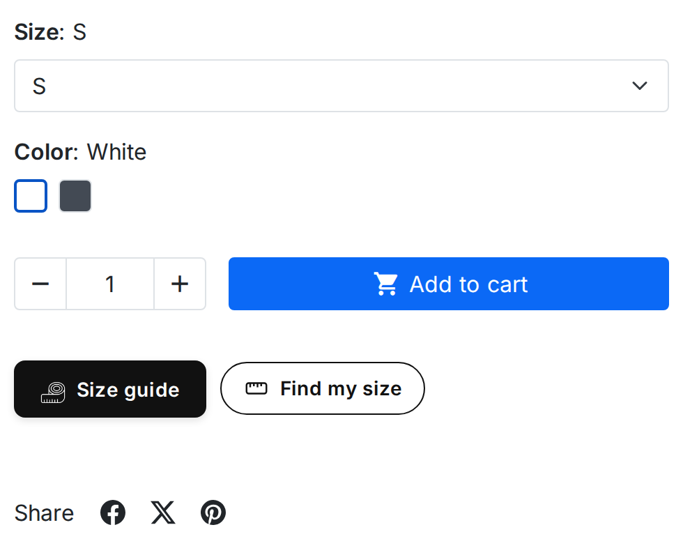
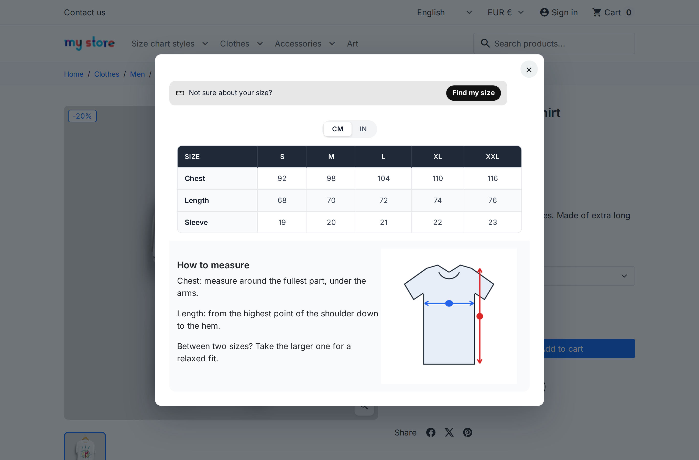
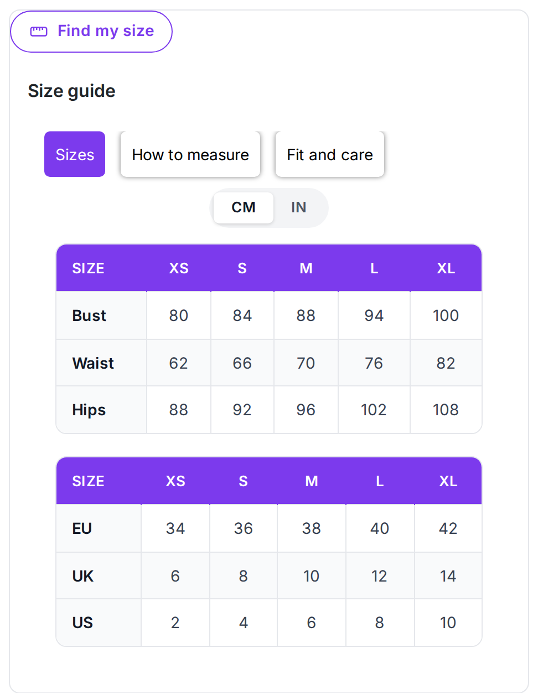
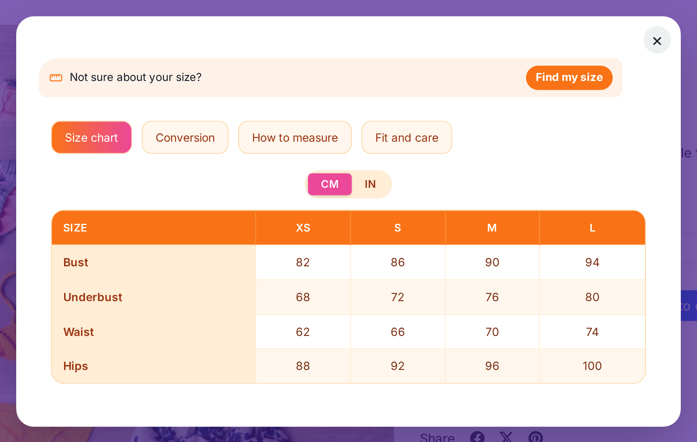
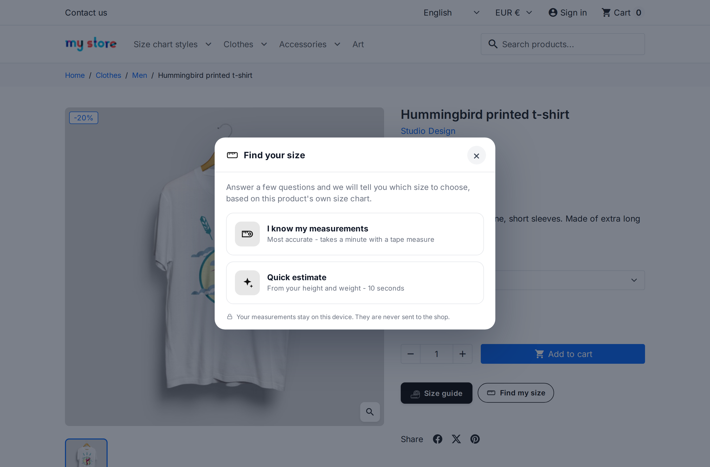

In popup mode, the button sits on the product page, by the add-to-cart button or wherever you placed it:

The “Size guide” button with its icon, and the “Find my size” button.
A click opens the chart in the popup. The shopper switches between CM and IN, and every value converts:

In page mode, the chart sits on the product page itself, under its heading:

A page-mode chart with three tabs and a unit switch.
A chart built from a theme, with tabs, in the popup:

With Find my size switched on (see Find my size), a Find my size button sits next to the Size guide button and at the top of the chart. The shopper chooses I know my measurements or a Quick estimate from height and weight, and gets the size to choose with a short fit explanation. The measurements stay on the shopper's device.

The chart shows in the shopper's language. A text left empty in that language is shown in another language in which it is filled in, so fill in every language your shop uses.